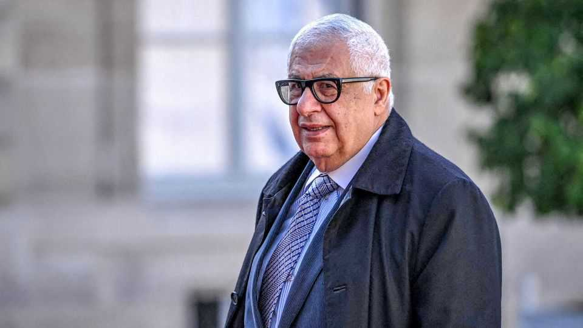

Nigeria’s builder-in-chief
A friend of the president is racking up infrastructure contracts

Aug 6th 2026
During flash floods in Lagos last month the water crept up to car doors and poured into homes, disrupting life in Nigeria’s commercial capital for days. Climate change is the main culprit for worsening flooding. But in poorer parts of Lagos some residents wonder if other factors could be exacerbating the damage. They worry that the construction of a coastal motorway and a sea wall, built to protect a new luxury waterfront district, may be eroding the seashore, worsening the impact of floods along the coast.
Yet residents may find it hard to get information about the impact of either project. Both are part of a $20bn infrastructure portfolio overseen by firms controlled by Gilbert Chagoury (pictured), a Lebanese-Nigerian billionaire and long-time friend of Bola Tinubu, the president. Mr Chagoury is not known for transparency.
Since its founding in 1971, the conglomerate the billionaire runs with his brother has dabbled in everything from flour mills to luxury hotels. Its infrastructure work has expanded on Mr Tinubu’s watch. Apart from the $11bn coastal motorway, the sea wall and the $6bn property development the wall protects, the group has also been put in charge of two port renovations to be paid for largely with a £746m ($1bn) loan guaranteed by the British government. International banks, including France’s BNP Paribas Fortis and Belgium’s KBC, helped finance the waterfront district.
Nigeria’s government argues the Chagoury group’s firms win many such projects because they deliver world-class infrastructure competently and efficiently, which few Nigerian companies can do. Yet critics claim the government has allowed the firms to bypass proper procurement and environmental rules. “There was no competitive bidding. There was not even restricted bidding,” Funso Doherty, an accountant and opposition politician, says of the coastal motorway. Mr Doherty filed a lawsuit against the government and HiTech, the firm building the road, alleging that it broke ground without the legally mandated environmental-impact assessment. A court threw out his case, arguing it was not his to bring. Such dismissals are so common that few people bother with legal challenges; Mr Doherty expects the appeal process to take years. (The government says HiTech was the fair winner of a selective bidding process and the road’s environmental impact was assessed before construction. Mr Chagoury and HiTech did not respond to a request for comment.)
Awarding infrastructure contracts based on merit is all the more essential because Nigerian projects are growing larger and pricier and are often financed by debt. The coastal motorway may also benefit from special tax breaks. In April the legislature approved a $516m loan to fund a cross-country motorway a Chagoury firm was awarded without bidding. (The government says it was selected for its expertise.) Nigeria had a fiscal deficit of 19.4trn naira ($12.8bn or 4.4% of GDP) in 2025. The IMF reckons it may be even larger, as about 8.8trn naira ($5.8bn or 2% of GDP) of public spending seems to have gone unreported (the finance minister disputes this).
To some in Nigeria, the relationship between the president and his master-builder smacks of a bygone era. In 2000 a Swiss court convicted Mr Chagoury of helping Sani Abacha, Nigeria’s last dictator, launder millions of dollars of stolen public funds. Mr Chagoury said he did not know the money he was moving had been stolen, but returned $66m to Nigeria and paid a fine of 1m Swiss francs ($600,000 in 2000). Abubakar Bagudu, now the minister in charge of dispensing public money, paid $163m to Nigeria in 2003 to settle a case related to Abacha’s looting of the state, without admitting guilt.
Mr Chagoury’s star is unlikely to fade soon. Mr Tinubu, who is counting on his friend’s support for a re-election bid next year, has brushed off criticism of the relationship; the sea wall will avert “a disaster greater than a tsunami”. In January he gave Mr Chagoury Nigeria’s second-highest national honour. “With friends like him,” the president said in 2024, “one can sleep with a still mind.” ■
Sign up to the Analysing Africa, a weekly newsletter that keeps you in the loop about the world’s youngest—and least understood—continent.